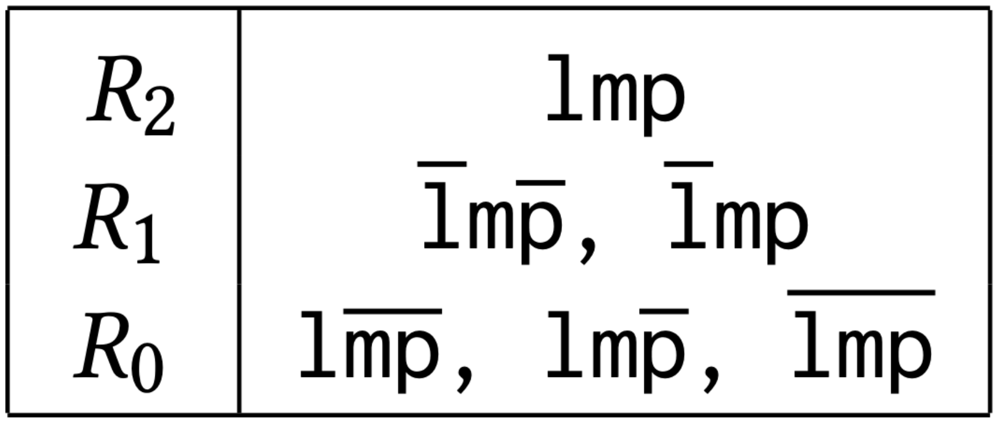
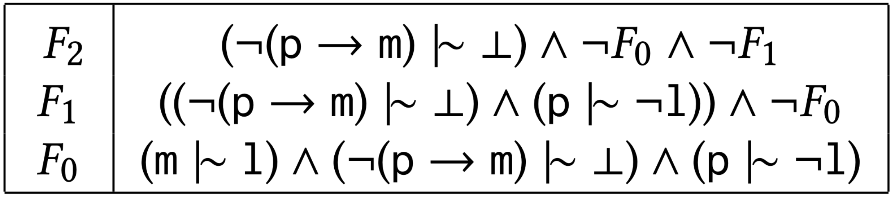
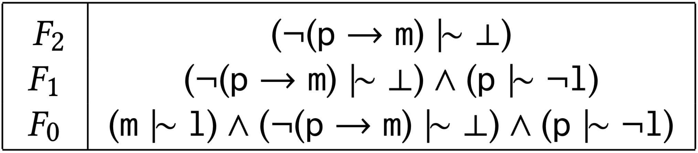

Model-Based Defeasible Reasoning
An investigation of model-based algorithms for formalizing human reasoning patterns.
Overview
Humans use different but valid patterns of reasoning to draw conclusions from the same knowledge base (information).
In situations of uncertainty, one may choose to draw conclusions conservatively or adventurously. Neither is more valid than the other, instead each may be more suitable in different scenarios.
Knowledge representation and reasoning (KRR) encodes knowledge and formalises these philosophical reasoning patterns. Such formalisms are used in 'top-down', knowledge-driven forms of artificial intelligence (in contrast to ‘bottom-up’, data-driven forms of artificial intelligence like machine learning).
Well-known patterns of reasoning are defined mathematically in two ways: syntactically (formula-based) and semantically (model-based). While there are formula-based algorithms for drawing conclusions, model-based entailment algorithms have not been explored.
Background
Classical Reasoning
Knowledge representation and reasoning is concerned with representing information about the world through formalisms like mathematical logic. We focus on a foundational logic referred to as classical propositional logic.
Using propositional logic, we can encode the following knowledge:
mammals give birth to live young, platypuses are mammals and platypuses do not give birth to live young, in a knowledge base.
But since we know that platypuses are mammals and mammals give birth to live young, using classical entailment we can conclude from this knowledge that platypuses give birth to live young!
This is a contradiction, as we explicitly state that platypuses do not give birth to live young. The only way to resolve this is to conclude that platypuses don’t exist at all (despite the fact that we know they do exist)!
Defeasible Reasoning
It is clear that propositional logic doesn’t always behave in a manner consistent with how we reason as humans. It cannot express typicality where implications are usually true but may have exceptions. Conclusions cannot be retracted even with the addition of new conflicting knowledge (for example, we would not be able to add any statement about platypuses to resolve the above contradiction).
Defeasible extensions of propositional logic and classical entailment address these shortcomings and allow for more human-like forms of reasoning. There are two key changes that defeasible reasoning introduces.
First is a new logical operator, similar to classical implications, called twiddle. It is used to convey typical implications, which permit exceptions to the rule.
Second are new definitions of entailment termed defeasible entailment relations. These define how consequences should be derived from a defeasible knowledge base. Unlike classical entailment, there is not an obvious way to define defeasible entailment. Instead, many forms of defeasible entailment are defined to represent several distinct but valid patterns of reasoning.
We can now reformulate our knowledge about platypuses to produce more reasonable conclusions by specifying that mammals typically give birth to live young.
With this change, most forms of defeasible entailment will no longer conclude that platypuses give birth to live young. Instead, the stronger statement that platypuses do not give birth to live young causes such a conclusion to be retracted/revised.
In this project, we consider two forms of defeasible entailment called rational closure and lexicographic closure. Both forms of entailment have algorithms that manipulate formulas in the knowledge base when answering entailment queries (i.e. whether a statement is a valid conclusion). While there are also equivalent model-based definitions, these have no corresponding algorithms.
Aims
The project attempts to address the gap in existing literature pertaining to the lack of algorithms, based on ranked-model semantics, for computing the rational and lexicographic closure of knowledge bases.
Hence, for both rational and lexicographic closure our aims were to define abstract model representations, construction algorithms for constructing such representations for given knowledge bases and entailment algorithms that use the constructed models to answer entailment queries.
Furthermore, we aimed to analyse and compare the algorithms' theoretical and execution time performance with that of existing ranked-formula based approaches in the literature.
Rational Closure
Introduction
Rational closure is consistent with a conservative form of reasoning known as prototypical reasoning, where in linguistic terms, objects that are typical examples inherit properties by default.
For example, since platypuses are atypical mammals, rational closure is not willing to allow platypuses to inherit most of the typical properties of mammals.
While entailment algorithms based on syntactic characterisations of rational closure have been developed, algorithms that directly manipulate the underlying models have not been explored. Thus, we investigate the development of model-based algorithms for computing rational entailment queries to close the literature gap and reap potential efficiency benefits.
Algorithms
Three new algorithms for constructing representations of the rational closure ranked models of a given defeasible knowledge base are defined:
-
The first algorithm, ModelRank, constructs a representation consistent with the abstract definition of ranked models in the literature.
 Ranked model for example knowledge base produced by ModelRank -
The second algorithm, FormulaRank, constructs new compact representations for the ranked models using representative formulas. Each representative formula corresponds precisely with the worlds situated on the corresponding level in the minimal ranked interpretation produced by ModelRank.
 Ranked model for example knowledge base produced by FormulaRank -
Finally, the CumulativeFormulaRank algorithm also constructs new compact representations using representative formulas. However, it produces a new class of representation that we term cumulative due to the nature in which worlds are associated with each rank. CumulativeFormulaRank also links an existing algorithm, RationalClosure, and model-based approaches.
 Ranked model for example knowledge base produced by CumulativeFormulaRank
Implementations
Although the contributions of this work are primarily theoretical, we felt there was merit in developing a cohesive minor software component that could aid not only the conceptual development of the algorithms presented within this paper but also assist future researchers within this area.
The software developed, therefore, primarily performed the role of a companion testing ground for the ideas we explored during the algorithms' development. The secondary role being to acquire baseline performance comparisons between the newly developed algorithms' mentioned above and pre-existing ranked-formula-based approaches in the literature.
Results and Future Work
We have defined three new algorithms for constructing ranked model representations to compute the rational closure of a given knowledge base.
All three algorithms are proven to produce the desired ranked models for computing the rational closure of a given knowledge base.
Time complexity results show that all algorithms perform O(n2) classical entailment checks and are thus not much more complex than the problem of boolean satisfiability for propositional logic (solvable in non-deterministic polynomial time).
All three algorithms are implemented, and their execution-time performance is benchmarked against implementations of existing algorithms. In practice, ModelRank allows for approximately constant time defeasible entailment query checking at the expense of exponential space complexity. FormulaRank is shown to be intractable when paired with the SAT solver that underlies the library used in the software implementation. CumulativeFormulaRank shows slightly worse performance than existing algorithms, but this was unexpected and suggests representing ranks as conjunctions of formulas instead of sets may hinder performance.
Future work includes extending these results to general forms of rational defeasible entailment and considering forms of entailment that allow for syntax-splitting, which refers to the restriction of attention to only the parts of the knowledge base that share atoms with a given query.
Lexicographic Closure
Introduction
Lexicographic closure is one of many forms of defeasible entailment. It corresponds to a presumptive pattern of reasoning. This philosophical pattern of reasoning is more adventurous in its conclusions than rational closure.
For example, we know that platypuses are an exceptional kind of mammal but lexicographic closure will still allow platypuses to inherit most of the typical properties of mammals while rational closure does not.
There are currently two equivalent model-based definitions of lexicographic closure. Both specify how to rank valuations/worlds to produce a specific ranked model of the knowledge base.
Algorithms
As is the case for our rational closure algorithms, we similarly produce 3 algorithms for constructing 3 different representations of the lexicographic ranked model that use the same 2 entailment algorithms as the rational closure representations.
- The LexicographicModelRank algorithm produces the ranked model directly and is compatible with the ModelSatisfaction algorithm.
- The LexicographicFormulaRank algorithm uses formulas to represent the worlds on each rank. We adapt the ModelSatisfaction algorithm to produce the FormulaModelSatisfaction algorithm, which uses this new representation.
- Finally, the LexicographicCumulativeFormulaRank algorithm constructs a cumulative representation of the ranked worlds using formulas. This representation is compatible with the FormulaModelSatisfaction algorithm.
An Undiscovered Lexicographic Closure
While formulating the cumulative lexicographic closure algorithm, we expected the results to bear close resemblance to the original formula-based algorithm for lexicographic closure, as this was the case for rational closure and its corresponding formula-based algorithm.
However, we notice that the more recent model-based characterization of lexicographic closure, upon which our algorithms are based, is in fact not equivalent to the original lexicographic closure definition. We thus prove that there are two different definitions of lexicographic closure in the literature.
Our algorithms, therefore, correspond to a new count-based form of lexicographic closure. Both definitions constitute refinements of rational closure in that the resulting ranked models preserve the order of the rational closure ranked model but refine preference within ranks.
The two distinct definitions correspond to separate patterns of reasoning. While much research has been conducted on the original definition and associated presumptive reasoning pattern, the more recent definition has not been explored at all.
Results and Future Work
We have produced 3 new algorithms for computing an undiscovered form of lexicographic closure in the literature.
While all algorithms belong to the same time complexity class of O(n2) in classical entailment checks, LexicographicModelRank is most practical when it comes to space efficiency, requiring the storage of all valuations, while the other algorithms belong to super-exponential space complexity classes.
We prove that the two model-based definitions of lexicographic closure in the literature are in fact not equivalent.
Our future work could include the development of similar algorithms for the original lexicographic closure definition. Additionally, we may further explore the newly-discovered lexicographic closure.
Resources
View and download resources related to MBDR
Literature Review
Jaron Cohen
Literature Review
Carl Combrinck
Proposal
Jaron Cohen & Carl Combrinck
Poster
Jaron Cohen & Carl Combrinck
Rational Closure Paper
Jaron Cohen
Lexicographic Closure Paper
Carl Combrinck
SACAIR Paper
Jaron Cohen & Carl Combrinck
GitHub Repository
Jaron Cohen & Carl Combrinck
Team
-
University of Cape Town
Department of Computer Science -
Email
dept@cs.uct.ac.za -
Website
sit.uct.ac.za -
Phone
+27 21 650 2663